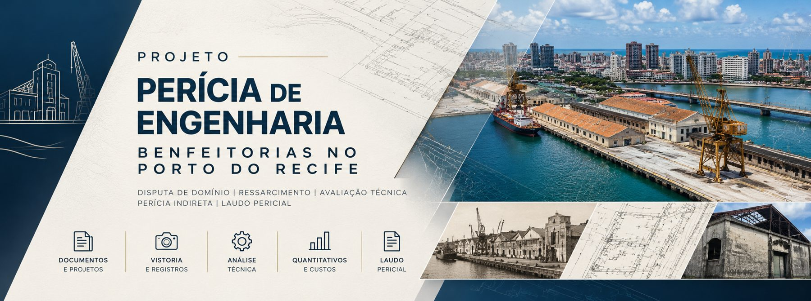

Identificação do processo
| Número | 0803444-36.2015.4.05.8300 |
|---|---|
| Classe | Procedimento Comum Cível (7) |
| Órgão julgador | 21ª Vara Federal – PE (TRF da 5ª Região) |
| Assunto | Compra e Venda |
| Valor da causa | R$ 8.844.131,15 |
| Segredo de justiça | Não |
| Sistema | PJe – 1º grau (TRF5) |
Companhia Nacional de Abastecimento – CONAB
Sucessora da extinta CIBRAZEM (Lei nº 8.029/1990, art. 19, II).
Porto do Recife S/A
Responsável pela demolição da edificação para implantação de empreendimento hoteleiro.
Dr. Erison Rosa de Oliveira Barros
Engenheiro – CREA-PE 38236.
Histórico processual e dominial
Síntese extraída do relatório e da fundamentação da decisão de 27/08/2026.
Termo de transferência prevê escritura pública de incorporação das instalações à CIBRAZEM.
Decreto nº 74.880 incorpora ao patrimônio da CIBRAZEM as benfeitorias e instalações dos entrepostos federais de pesca, incluindo o Entreposto Federal de Pesca – Recife e o Posto de Recepção Ponte Giratória.
Lei nº 8.029 autoriza a extinção da CIBRAZEM por fusão; o patrimônio passa à CONAB.
Laudo CEF nº 7137.7137.826644/2010: valor mínimo de venda de R$ 3.494.000,00 (documento extraviado, segundo a autora).
Ofício SDEC nº 573/2011-GS (21/11/2011): o Estado de Pernambuco propõe adquirir as benfeitorias da CONAB.
Por recomendação da CGU, novo laudo CEF nº 7137.7137.049526/2012: R$ 6.523.000,00. Ação de Demolição nº 0007857-33.2012.4.05.8300 (3ª VF/PE); sentença em 18/07/2013.
CONAB ajuíza ação de cobrança do saldo (R$ 5.870.700,00 históricos; R$ 8.844.131,15 atualizados).
Sentença de procedência (1ª VF/PE), em dezembro.
Apelação provida: sentença anulada e instrução reaberta para produção de provas documentais e periciais. Embargos e REsp não providos.
Redistribuição à 21ª Vara Federal/PE e migração ao PJe 2.x.
Decisão (ID 183149730): reconhece a CONAB como proprietária das benfeitorias (não do domínio útil), defere perícia indireta e nomeia o perito.
Despacho (ID 189651720): registra que quesitos inviáveis em razão da demolição, ou baseados em método não utilizado pelo laudo analisado, podem ser dispensados após verificação dos elementos disponíveis.
Objeto e escopo da perícia
Pontos controvertidos fixados
- A adequação metodológica do Laudo de Avaliação CEF nº 7137.7137.049526/2012.
- A melhor forma de definir o valor econômico das benfeitorias e instalações do antigo “Entreposto de Pesca do Recife”.
O que cabe ao perito
- Esclarecer se o método involutivo era adequado à hipótese;
- ou se deveria ter sido adotado o método comparativo direto de dados de mercado – caso em que o perito deve aplicá-lo e calcular o valor da edificação;
- Trabalhar de modo indireto, a partir do laudo de 2012 e dos demais elementos dos autos ou apresentados pelas partes;
- Descrever o método utilizado e responder conclusivamente aos quesitos (art. 473 do CPC).
Premissas fixadas pelo Juízo
- O terreno é de marinha / acrescido de marinha – propriedade da União (DL nº 9.760/1946).
- A CONAB era proprietária das benfeitorias e instalações, mas não titular do domínio útil do terreno.
- A reparação decorre da destruição do patrimônio, e não de alienação voluntária.
- A edificação foi demolida e substituída por empreendimento hoteleiro: vistoria direta impossível.
- Rejeitada a “precariedade dominial e registral” como fator de depreciação.
- Indeferidas diligências sobre o “Armazém 12” (matrícula nº 91430), estranho ao litígio.
Etapas do trabalho pericial
Documentos e projetos
Levantamento e análise do laudo CEF/2012, perícia da ação demolitória, plantas, registros e iconografia histórica.
Registros e reconstituição
Reconstituição indireta da edificação (área, padrão, estado de conservação) a partir de fontes documentais e imagens.
Análise metodológica
Exame do enquadramento do método involutivo frente à NBR 14653 e à disponibilidade de dados de mercado.
Quantitativos e custos
Quando cabível, aplicação do método comparativo e/ou evolutivo (custo de reedição com depreciação) para as benfeitorias.
Laudo pericial
Redação do laudo, respostas aos quesitos e juntada com ART.
Prazos fixados na decisão
Prazos contados da respectiva intimação, em dias úteis (art. 219 do CPC).
| Ato | Responsável | Prazo | Base legal |
|---|---|---|---|
| Quesitos, indicação de assistentes técnicos e juntada dos contratos | Partes | 15 dias | CPC, art. 465, §1º; arts. 84 e 95 |
| Proposta de honorários detalhada e justificada | Perito | 10 dias | CPC, art. 465, §2º |
| Manifestação sobre a proposta | Partes | 5 dias (comum) | CPC, art. 465, §3º |
| Depósito dos honorários, se houver anuência | Ré (Porto do Recife S/A) | 5 dias | CPC, art. 95, §1º |
| Comunicação de data, hora e local de início dos trabalhos | Perito | antecedência mínima de 5 dias | CPC, art. 466, §2º |
| Entrega do laudo pericial | Perito | 30 dias | CPC, art. 473 |
Documentos e links
Decisão de 27/08/2026
Nomeação do perito e fixação dos pontos controvertidos · ID 183149730
🔏Validação da decisão no PJe
Conferência de autenticidade do documento assinado eletronicamente
⚖️Consulta pública – PJe 1º grau TRF5
Pesquisar pelo número 0803444-36.2015.4.05.8300
💾Repositório desta página
Código-fonte público da página no GitHub (HTML, estilos, imagens e decisão em PDF). Contém apenas conteúdo informativo; o material de trabalho da perícia não é publicado.
🏛️Justiça Federal em Pernambuco
Portal da Seção Judiciária de Pernambuco
🏛️TRF da 5ª Região
Portal do Tribunal Regional Federal da 5ª Região
Peças relevantes referidas nos autos
| Documento | Referência | Situação |
|---|---|---|
| Laudo de Avaliação CEF nº 7137.7137.049526/2012 | ID 162643877 e seguintes | Nos autos – base da perícia indireta |
| Laudo de Avaliação CEF nº 7137.7137.826644/2010 | — | Extraviado (informação da autora, ID 166878049) |
| Manifestação do perito na Ação de Demolição nº 0007857-33.2012.4.05.8300 | ID 151299365 | Nos autos |
| Sentença da Ação de Demolição (18/07/2013) | ID 151299802 | Nos autos |
| Certidão do 1º Ofício de Registro de Imóveis do Recife (Transcrição nº 22.078, Livro 3-M, fl. 330v) | ID 162643874 | Nos autos |
| Ofício SEI nº 93914/2026/MGI – SPU | ID 176112305 | Nos autos |
| Ofício SDEC nº 573/2011-GS – Estado de Pernambuco | ID 154688236 | Nos autos |
| Termo de fusão CIBRAZEM/CONAB | ID 154688230, p. 6 | Nos autos |
| Recomendação da CGU para novo laudo | — | Não localizada pela autora |
Fundamentação normativa
Normas técnicas
- ABNT NBR 14653-1 – Avaliação de bens – Parte 1: Procedimentos gerais.
- ABNT NBR 14653-2 – Avaliação de bens – Parte 2: Imóveis urbanos.
- ABNT NBR 13752 – Perícias de engenharia na construção civil.
- ABNT NBR 12721 – Avaliação de custos unitários de construção (referência para custo de reedição).
Edições a confirmar na versão vigente no Catálogo ABNT na data do laudo.
Legislação
- Lei nº 13.105/2015 – Código de Processo Civil (arts. 95, 465, 466, 473)
- Decreto-Lei nº 9.760/1946 – Bens imóveis da União
- Lei nº 8.029/1990 – Extinção e dissolução de entidades da Administração Pública Federal
- Decreto nº 74.880/1974 – Incorporação de benfeitorias dos entrepostos federais de pesca à CIBRAZEM
- Lei nº 10.406/2002 – Código Civil (art. 108, invocado pela ré)
Perito do Juízo
Prof. Dr. Erison Rosa de Oliveira Barros
Engenheiro – CREA-PE 38236 · Professor da Universidade Federal de Pernambuco (UFPE), Departamento de Engenharia Cartográfica (DECART/CTG).
Áreas: Engenharia Cartográfica e Agrimensura, Cadastro Territorial, Topografia, Geodésia, Fotogrametria, Sensoriamento Remoto, SIG e avaliação de imóveis.
Comunicações com as partes e assistentes técnicos devem ocorrer por meio dos autos, nos termos do CPC.